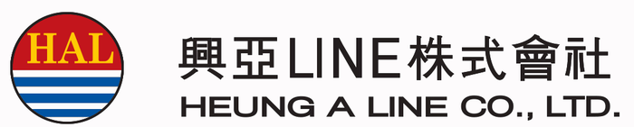

เทียบ B/L ที่ลูกค้าส่งมากับ DRAFT จากระบบ HAL ครบ 27 หัวข้อ รวม RIDER / AS PER ATTACHED แล้วออกรายงาน Excel แบบใส่สี จุดไหนไม่ตรงเห็นได้ทันทีก่อนออก B/L จริง
ทำครั้งเดียวต่อเครื่อง ใช้ Windows (ถ้าใช้แบบออนไลน์ ข้ามส่วนนี้ได้เลย)
ติดตั้ง Python 3 จาก python.org/downloads
หน้าแรกของตัวติดตั้ง ติ๊ก ☑ Add python.exe to PATH ก่อนกด Install Now
ดาวน์โหลดโปรแกรม กดปุ่ม “ดาวน์โหลดโปรแกรม (ZIP)” ด้านบน
คลิกขวาที่ไฟล์ ZIP → Extract All แล้วเก็บโฟลเดอร์ไว้ที่ไหนก็ได้ เช่น Documents
รันครั้งแรกต้องต่ออินเทอร์เน็ต
โปรแกรมจะติดตั้งไลบรารีที่ต้องใช้ (pdfplumber, openpyxl) ให้เองอัตโนมัติ
วางไฟล์ในโฟลเดอร์ input
B/L ของลูกค้า 1 ไฟล์ และ DRAFT ของ HAL 1 ไฟล์ ชื่อไฟล์ต้องมีเลข B/L และไฟล์ DRAFT ต้องมีคำว่า DRAFT เช่น CLIENT HASLS22260901995.pdf กับ DRAFT HAL HASLS22260901995.pdf ใส่หลาย B/L พร้อมกันได้
ดับเบิลคลิก run-bl-check.bat
หรือดับเบิลคลิก open-bl-checker.bat เพื่อเปิดหน้าต่างโปรแกรม เลือกไฟล์ทีละคู่แล้วกด CHECK
เปิดผลที่ output\BL CHECK <เลข B/L>.xlsx
หน้าจอดำจะสรุปหัวข้อที่ไม่ตรงให้ด้วย ถ้าเปิดไฟล์ Excel ค้างไว้ ต้องปิดก่อนรันใหม่
RIDER เช่น CLIENT RIDER HASLS22260901995.pdf, DRAFT HAL RIDER HASLS22260901995.pdfAS PER ATTACHED RIDER / SEE ATTACHED SHEET / AS PER ATTACHED DESCRIPTIONS แต่อีกฝั่งพิมพ์รายละเอียดไว้ในช่องนั้น จะไปหารายละเอียดใน RIDER ให้ เจอครบ = สีฟ้า ไม่เจอ = สีแดงหนึ่งแถวต่อหนึ่งหัวข้อ ค่าของ CLIENT กับ DRAFT วางคู่กัน ช่องขวาสุดบอกว่าต่างกันตรงไหน ชีต RIDER CHECK แสดง RIDER สองฝั่งเทียบกันทีละบรรทัด
| NO. | FIELD | CLIENT B/L | DRAFT HAL B/L | RESULT | DETAILS OF DIFFERENCE |
|---|---|---|---|---|---|
| 2 | SHIPPER | ABC TRADING CO., LTD. | ABC TRADING CO., LTD. | MATCH | |
| 12 | CONTAINER NO. / SEAL NO. | ABCU1234567 SL0001 DG | ABCU1234567 SL0001 | NOT MATCH | CLIENT has: "DG" |
| 16 | GROSS WEIGHT | 13,842.000 KGS | 15,163.200 KGS | NOT MATCH | difference -1,321.200 KGS |
| 6 | PLACE OF RECEIPT | LAEM CHABANG | — | MISSING IN DRAFT | DRAFT is blank |
| 15 | DESCRIPTION OF GOODS | CHEMICAL … | AS PER ATTACHED RIDER | MATCH (via rider) | found in DRAFT rider |
| 25 | NO. OF ORIGINAL B(S)/L | 3 / THREE | THREE(3) | MATCH (format differs) | Both = 3 |
ตัวอย่างประกอบเท่านั้น ชื่อบริษัทและเลขตู้สมมติ
สำหรับคนที่ใช้ Claude Code อยู่แล้ว ให้ Claude ตรวจ อธิบายผล และเพิ่มแบบฟอร์ม B/L ใหม่ได้เอง
git clone https://github.com/Rattanao/B-L-CHECK-REPORT-Export.git %USERPROFILE%\.claude\skills\bl-check
เปิด Claude Code ใหม่ ไปที่โฟลเดอร์งาน แล้วพิมพ์ เช่น “เช็ค B/L HASLS22260901995”
| ข้อความ / อาการ | วิธีแก้ |
|---|---|
| ไม่พบ Python | ติดตั้ง Python ใหม่ และติ๊ก Add python.exe to PATH |
| PermissionError / Cannot save | ปิดไฟล์ BL CHECK.xlsx ใน Excel แล้วรันใหม่ |
| No CLIENT/DRAFT PDF pairs found | ตรวจว่าไฟล์อยู่ในโฟลเดอร์ input ชื่อไฟล์มีเลข B/L และไฟล์ HAL มีคำว่า DRAFT |
| No text found in the PDF | PDF เป็นไฟล์สแกนเป็นรูปภาพ ต้องใช้ PDF ที่เลือกข้อความได้ |
| Form layout not recognised well / ช่องว่างเยอะผิดปกติ | B/L เป็นแบบฟอร์มที่ยังไม่รองรับ เพิ่มตำแหน่งช่องใน scripts\layouts.json หรือให้ Claude Code เพิ่มให้ |